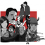
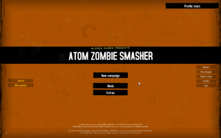
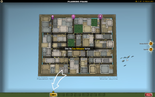
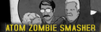

Atom Zombie Smasher
Dieser Artikel wurde für die folgenden Ubuntu-Versionen getestet:
Ubuntu 16.04 Xenial Xerus
Zum Verständnis dieses Artikels sind folgende Seiten hilfreich:

Atom Zombie Smasher  ist ein Taktik-Spiel in dem eine Zombie-Invasion, die mit verschiedenen Waffen aufgehalten werden soll. Man übernimmt eine Söldnertruppen und evakuiert die Bevölkerung bevor diese zur Beute der Untoten wird oder eliminiert diese im Vorfeld. Nach errungenen Siegen erhalten Waffen und Söldner verschiedene Upgrades.
ist ein Taktik-Spiel in dem eine Zombie-Invasion, die mit verschiedenen Waffen aufgehalten werden soll. Man übernimmt eine Söldnertruppen und evakuiert die Bevölkerung bevor diese zur Beute der Untoten wird oder eliminiert diese im Vorfeld. Nach errungenen Siegen erhalten Waffen und Söldner verschiedene Upgrades.
Das Spiel kann ebenfalls mit einem Gamepad gespielt werden.
|  |  |
| Hauptmenü | Spielszene |
Installation¶
Desura¶
Das Spiel kann über die Internetseite oder den Client zur Spieleliste hinzugefügt und gestartet werden [1].
Humble Indie Bundle #3¶
Die Installationsroutine atomzombiesmasher-10172016-bin aus der Aktion Humble Indie Bundle herunterladen und Ausführrechte vergeben [1]. Nach dem Aufruf der Datei [3] wählt man das Installationsverzeichnis (z.B. ~/Spiele/atomzombiesmasher) und startet den Titel nach erfolgter Installation über das Menü.
Patch¶
Ein Patch kann von Blendo Games  heruntergeladen werden. Das .tar-Archiv in das Installationsverzeichnis entpacken [4].
heruntergeladen werden. Das .tar-Archiv in das Installationsverzeichnis entpacken [4].
Hinweis:
Im Menü kann man in der unteren linken Ecke die Versionsnummer ersehen.
Spielstart¶
In das Installationsverzeichnis wechseln und das Spiel mit AtomZombieSmasher starten [2]. Zusätzliche Startparameter können verwendet werden.
| Startparameter | |
| Parameter | Beschreibung |
-width 1024 | Breite der Bildauflösung definieren. Hier: 1024px |
-height 768 | Höhe der Bildauflösung definieren. Hier: 768px |
-fullscreen 1 | Vollbildmodus (Wert=1) oder Fenstermodus (Wert=0) verwenden. |
-mod ModName | Das Spiel mit dem Mod ModName laden. |
-framerate 60 | Anzahl der Bilder pro Sekunde ändern - hier: 60 |
-sound 0 | Audioausgabe deaktivieren. |
-joystick 0 | Unterstützung für Joysticks und Gamepads ausschalten. |
-vsync 0 | Vertikale Synchronisation deaktivieren. |
Auf Wunsch kann ein Menüeintrag [3] vorgenommen werden. Nach dem ersten Start wird der Ordner ~/.config/AtomZombieData im Homeverzeichnis angelegt. In diesem werden die Einstellungen und Spielstände gespeichert.
Mods¶
Im Hauptmenü "Mods" anwählen. Hier können Mods erstellt, bearbeitet, heruntergeladen und mit anderen Spielern online getauscht werden. Ein Beispiel .
Demo¶
Ein Demo kann von blendogames.com heruntergeladen werden. Die Installation entspricht der Vollversion.
Tastenkürzel¶
| Tastenkürzel | |
| Taste(n) | Funktion |
 | Einheit auswählen. |
 | Einheit anfordern. |
 | Zoomen (Mausrad) |
| Einheit abwählen. |
| T | Notstart Hubschrauber |
| + / - | Spielgeschwingkeit ändern. |
| Pause | |
| Strg + + | Max. Geschwindigkeit |
| Strg + - | Min. Geschwindigkeit |
| Strg + | Normale Geschwindigkeit |
| 1 ... 0 | Schnellauswahl der Einheiten. |
| F1 | Zedpedia |
| F2 | Log |
| F3 | Victory Track |
| F4 | Liste der Söldner. |
| F5 | Hinzufügen / Entfernen von Spielern. |
| F9 | Neustart der aktuellen Mission. |
| ⇧ | Zurücksetzung aller Werte. Die Taste beim Spielstart drücken und gedrückt halten. Eine Nachricht erscheint, wenn die Aktion erfolgreich verlaufen ist. |
Problembehebung¶
Spielen auf 64-Bit-Systemen¶
Atom Zombie Smasher versagt auf 64-Bit-Systemen unter Umständen den Start. Um das Spiel auf 64-Bit-Systemen lauffähig zu machen, kann es daher nötig sein, die 32-Bit-Bibliotheken nachzuinstallieren [5]:
ia32-libs (universe)
 mit apturl
mit apturl
Paketliste zum Kopieren:
sudo apt-get install ia32-libs
sudo aptitude install ia32-libs

Infobox¶
| Atom Zombie Smasher | |
| Originaltitel: | Atom Zombie Smasher |
| Genre: | Strategie |
| Sprache: | |
| Veröffentlichung: | 2011 |
| Publisher: | Blendo Games |
| minimale Systemvoraussetzungen: | Prozessor mit 1GHz / 512 MB RAM / 50 MB Festplattenplatz / OpenGL-kompatible Grafikkarte |
| Medien: | Download |
| Strichcode / EAN / GTIN: | - |
| Läuft mit: | nativ |

- Erstellt mit Inyoka
-
 2004 – 2017 ubuntuusers.de • Einige Rechte vorbehalten
2004 – 2017 ubuntuusers.de • Einige Rechte vorbehalten
Lizenz • Kontakt • Datenschutz • Impressum • Serverstatus -
Serverhousing gespendet von